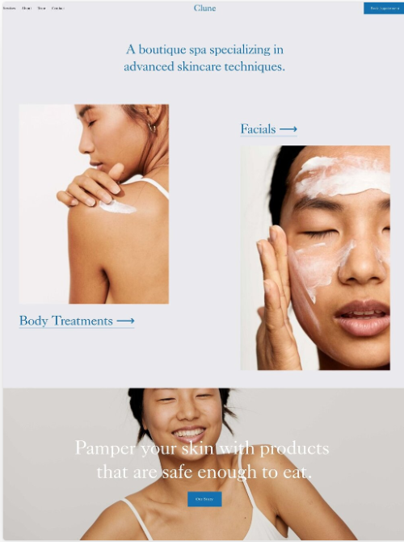
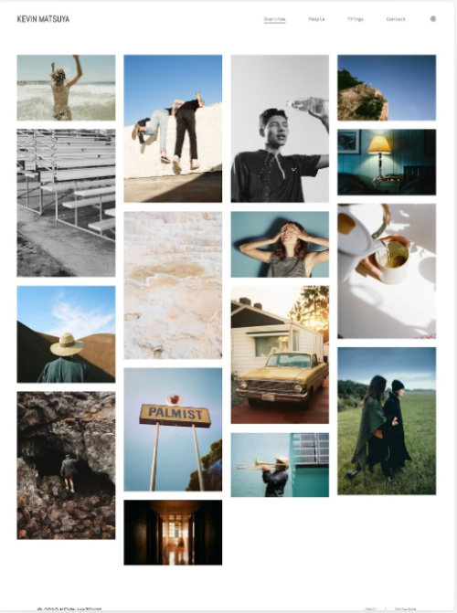

Best Burger
Ideal for a small to medium sized fast food shop but can be scaled up for larger businesses. Its a mordernised Website that looks good and puts the food front and center of everything. It has a clean design that doesnt out shine the vibrat colors of the food. Can be customized.
Food Blog
want to vlog about your travels and awesome meals you have while travelling the world? This template is a perfect starting point for your adventure. Keep your fans uup to date with this state of the art website. The design will compliment any sort of picture or video content.


Make Up shop
A template that is perfect for show casing make up products. Want to reach more pontential customers? This template will allow you to do just that. Like this template but dont sell make up? No worries you can customize it whichever way you like and make it your own.
Personal Site
A great way to enhance your reach on the internet. Pontential employers, friends and family can easily see your achievements with this site. Ideal for freelance photographers, allowing you to easily show all the projects you have done all in one single site.
